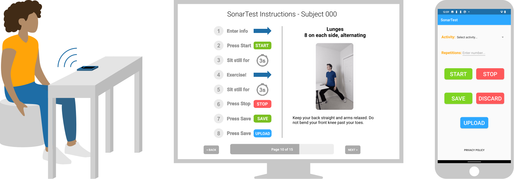
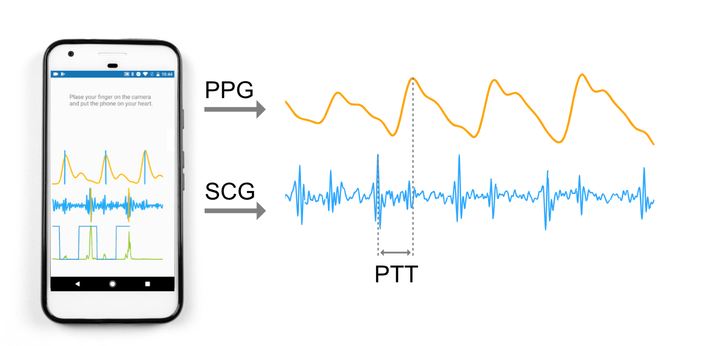
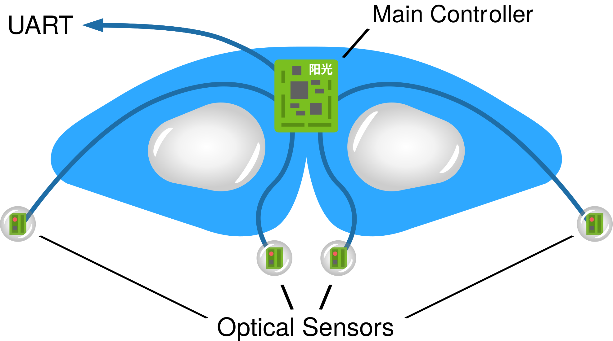
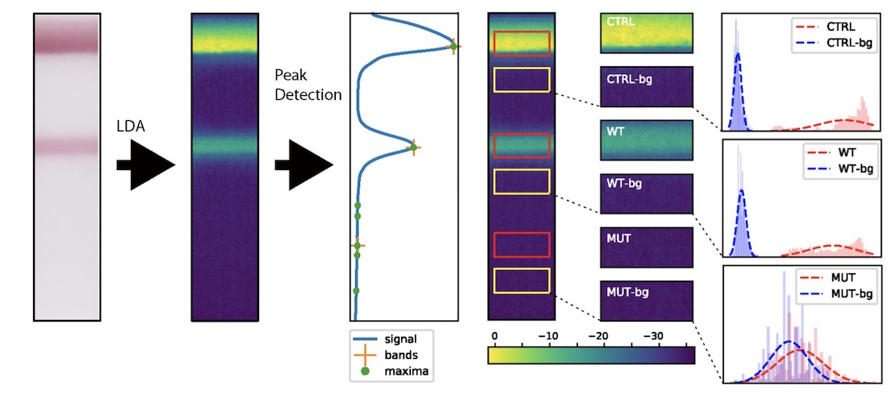

Every year over forty thousand strokes are caused by internal carotid stenosis in the US alone. Although these strokes are preventable with endarterectomy, most cases go undetected. We hypothesize that it is possible to detect the presence of internal carotid stenosis by measuring pulse delay to the face in a rapid, non-invasive smartphone-based test. I am currently developing signal processing algorithms for robustly extracting pulse delay from facial images. This system will be tested in collaboration with colleagues in bioengineering and vascular surgery at University of Washington Medicine.

Physical inactivity is the fourth leading risk factor for death worldwide, and yet eighty percent of US adults do not meet national exercise recommendations. In collaboration with the Sports Institute at UW Medicine, the UbiComp Lab is designing a smartphone application that can be prescribed to patients at University of Washington Medicine clinics. We believe that physical activity is a vital sign that should be monitored closely alongside blood pressure and BMI. Our application will assist in goal setting, provide context-aware nudges, and connect exercise data with health care providers. To extend the quantification of physical activity beyond step counting, I am evaluating the use of acoustic sonar sensing to classify a wide range of exercises. I am mentoring two high school interns who are assisting with data collection and analysis.
I am preparing to submit this work as primary author.
Detecting the presence and frequency of coughing is important for monitoring symptoms and diagnosing respiratory illnesses. In response to the COVID-19 pandemic, I supported an urgent effort to enable cough detection on mobile devices. I adapted existing cough detection models to run in real time on Android smartphones and smartwatches by implementing efficient signal processing algorithms for generating time-frequency representations and running pre-trained TensorFlow Lite models on-device.
Osteoporosis is characterized by a decrease in bone mass density (BMD) causing millions of fractures annually. The clinical standard for measuring BMD requires radiation, access to expensive equipment, and trained staff, motivating the need for a low-cost and ubiquitous alternative. Towards this goal, I prototyped OsteoApp, a smartphone application that aims to infer bone mass density by measuring resonant frequency in a human tibia using the built-in accelerometer. I tested this system alongside a low-noice accelerometer data collection system I built with patients from local retirement communities as well as a control group of healthy volunteers, and performed signal processing and data analysis in Python. I presented this work at the 2019 University of Washington Undergraduate Research Symposium.
Poster
Pulse transit time (PTT) is the time differential between the heartbeat and the arrival of the pulse pressure wave at the fingertip. Since PTT is indicative of arterial stiffness, it can provide an early sign of atheroscloerosis and cardiovascular disease. Additionally, PTT is inversely correlated with blood pressure, providing an opportunity to perform noninvasive estimation of of blood pressure using commodity devices. Prior work from my lab proposed the use of smartphones to measure PTT; I built upon this work by implementing a smartphone application that can perform real-time sensing, signal processing, and visualization code for the Android smartphone platform. I presented this work within the Paul G. Allen School of Computer Science & Engineering at an annual technology CEO summit and the 2018 Industry Affiliates Research Day, as well as the 2018 University of Washington Undergraduate Research Symposium.
Poster CodeWhen a patient with obstructive sleep apnea stops breathing during sleep, the sympathetic nervous system becomes activated in response to the interrupted respiration; this sympathetic drive persists during wakefulness. Although the nervous deregulation is difficult to measure directly, it is believed to manifest in discernible changes to the coordination between cardiac and respiratory systems. This project aimed to detect subtle changes in this cardiac signature to screen for sleep apnea. I assisted with data collection at the Harborview Sleep Medicine Center by recording cardiac and respiratory signals while participants executed a series of breathing maneuvers. I processed and analyzed the data using MATLAB to extract timing features.
Between 30 and 50% of ischemic strokes are caused by systemic embolism, which are small particles floating in the arterial circulation. Embolic stroke is linked with the presence of microemboli (ME); these small circulating particles are too small to cause stroke but their presence and quantity predict future embolic stroke. ME is detected with transcranial doppler (TCD) ultrasound, which measures signals of ME passing through the middle cerebral artery in the brain. However, TCD requires access to specialized equipment and trained staff. I aim to overome these limitations of TCD by designing a wearable ultrasound sensor capable of continuously detection of ME. I designed a prototype circuit and a blood flow simulator to perform initial tests. I plan to test this system on stroke patients with support from collaborators in UW neurosurgery.
With wireless earbuds becoming increasingly powerful and widely used, we recognize an opportunity to leverage them as a platform for performing continuous physiological measurements. Modern earbuds can contain acoustic, inertial, optical, and proximity sensors that may be re-purposed to track vital signs and perform diagnostics. My contribution to this work is prototyping signal processing techniques for in-ear physiological sensing, in addition to advising and supporting study design, data collection, data analysis, and paper writing.
Postural Orthostatic Tachycardia Syndrome (POTS) is a rare condition associated with dysregulation of the cardiovascular system. Our project aims to build and test a wearable system to quantify changes in hemodynamics to help individuals with POTS detect and prevent onset of hypotensive syncope. I support this work by advising on embedded systems, signal processing, and study design, in addition to exploring possible physiological mechanisms for this rare syndrome.

The face provides a very unique opportunity for performing physiological sensing using wearables and camera-based systems. Measuring the vascular network in the face may enable disease diagnosis and continuous monitoring. A powerful and widely used technique for facial sensing is photoplethysmography (PPG), a non-invasive optical measurement of blood pulses. However, facial PPG remains under-explored in terms of both signal acquisition and analysis. To characterize the timing and morphological features of facial PPG waveforms I designed, built, and tested a multi-channel facial PPG sensing system that can record synchronized pulse waveforms at multiple locations and optical wavelengths. I work closely with a clinical collaborator from University of Washington Medicine, in addition to mentoring two undergraduate students on this project.
PaperAbacavir is a nucleoside analog reverse-transcriptase inhibitor used to treat HIV. Although it is generally well tolerated, it triggers dangerous anaphylactic shock in patients with the HLA-B*57:01 genotype. Scientists and engineers from UW Bioengineering and Seattle Children's Hospital developed a colorimetric lateral flow assay to identify patients at risk for drug sensitivity. I supported this work by applying image processing to reduce human error in assay interpretation.
Motivated by the need for population level monitoring of COVID-19 transmission, the UbiComp lab is working in partnership with Microsoft Research to develop protocols for obtaining environmental samples from public transportation air filtration systems to detect the presence of SARS-CoV-2. I support efforts by advising on study design, performing literature review, coordinating with collaborators, and participating in paper writing.
Detecting and mitigating outbreaks of COVID-19 requires rapid and high throughput testing, disproportionately impacting regions with limited access to reagents, supplies, and trained staff. I am working with bioengineering collaborators who are developing and testing faster and simpler COVID-19 protocols by performing direct amplification, bypassing the RNA extraction step. My contribution to this work is creating image processing algorithms for quantifying output fluorescence to reduce time and human error for point-of-care COVID-19 testing applications. This system is currently being tested at clinical facilities in the US and Zimbabwe.
Paper
Testing for drug resistant strains of HIV is necessary for clinicians to effectively treat patients; however, the standard genotyping assays like Sanger sequencing are infeasible in resource-limited settings where drug resistant HIV is increasingly circulating. OLA-Simple is a low-cost paper-based lateral flow strip test and chemistry kit that can be used to amplify and detect low amounts of drug-resistant strains of HIV. Five common drug-resistant mutations can be visualized as colored bands on a paper strip; however, human error limits the sensitivity and specificity of this test when interpreted by eye. I built computer vision code to read flatbed scanner images, isolate paper strips, and measure the band intensities to interpret the test results. I used this code to generate data for major tables and figures in the paper for this project, and performed an evaluation with training and testing datasets that demonstrated over 99% accuracy. I presented my work to collaborating clinicians, professors, and students at regular project meetings.
Paper Paper
I worked with a biology graduate student to translate written synthetic biology protocols into code for the Aquarium lab automation system. This work supported a multi-institutional collaboration aiming to examine neural net regeneration in Hydra, small freshwater organisms with the ability to reform from disaggregated cell masses. I formalized and quantified synthetic biology workflows for both husbandry and transgenics protocols, creating appropriate algorithms and data management schemes to perform high-throughput experiments and optimize DNA transfection efficiency.